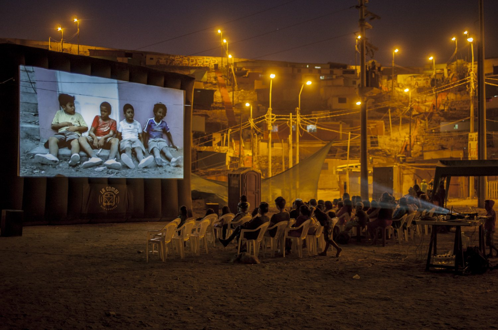
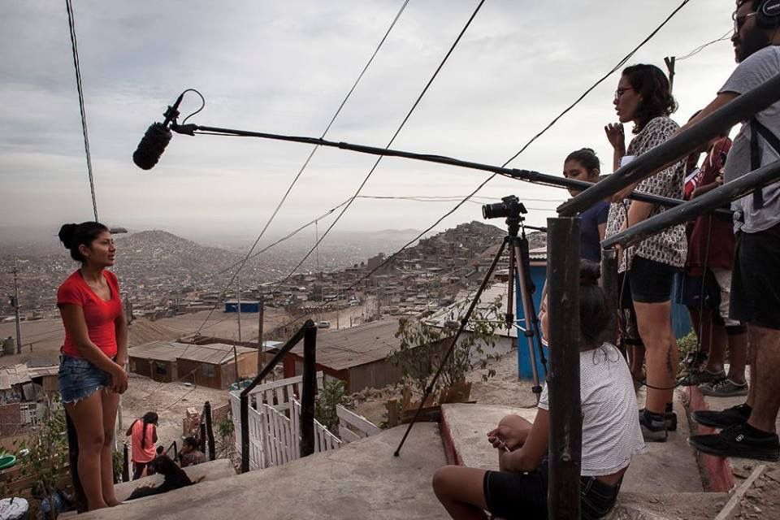

En ruta
Censurados no se queda en una semana ni en una ciudad. Durante todo el año, el cine que no quieren que veas sale de viaje: a comunidades donde casi nunca llega, y a festivales, centros culturales y celebraciones de otros países que comparten nuestra lucha por la libertad de expresión.
Unas veces viajamos con nuestra pantalla inflable de siete metros: muestras itinerantes por salas y centros culturales de Chiclayo, Trujillo, Arequipa, Cusco, Pucallpa, Puerto Maldonado o Puno, y giras con proyecciones al aire libre, talleres y conversatorios en pueblos y comunidades indígenas. Otras, son otros espacios los que nos invitan: llevamos nuestras películas a festivales amigos, como Zentsura At! en Bilbao, y nos sumamos a jornadas internacionales como el Music Freedom Day.

Muestras itinerantes
Desde 2015, las películas del festival viajan a comunidades y ciudades donde casi nunca llega este cine, muchas veces con proyecciones al aire libre y para un público de niños y adolescentes.
2015 · Perú
Chungui (Ayacucho), Lambayeque, Trujillo, Arequipa y Cusco. Más de 3.500 espectadores.
2018 · Muros (In)Visibles
Lima, la frontera entre Guatemala y México, Tijuana–San Diego y Ciudad de México.
2019 · Voces (In)visibles
Ucayali, Tumbes, Trujillo, Chiclayo y Arequipa, en el Perú, y Tapachula y Ciudad de México, en México. Además, de la mano de nuestras contrapartes locales, Acre (Brasil) y Meta y Nariño (Colombia).
2023 · Las ganadoras del 9CFF
En abril y mayo, las películas premiadas viajaron al Centro Cultural de España en Lima, al Cine Umbral de Arequipa, a la Sala Huaqo de Trujillo y a la sala El Zorro de Arriba de Urubamba.
2024–2025 · Después de Arequipa
Tras cada edición, la programación siguió su camino por Iquitos, Cusco y San Bartolo, entre otros lugares. En el Cine SanBar se proyectó Vicenta B, que no había podido verse durante el festival.
Las Tratan
«El cine mira lo que muchos no quieren ver».
Desde 2015, Las Tratan usa el cine para visibilizar, denunciar y prevenir la trata de personas en el Perú, una violación de los derechos humanos que afecta sobre todo a mujeres, adolescentes y niñas.
Es un proyecto de La Combi – arte rodante que se desarrolla en el marco de Censurados: muestras de cine, talleres participativos y actividades comunitarias que convierten la indignación en acción.
- 12.000personas han participado en sus actividades
- +200adolescentes en talleres de creación colectiva
- +30películas sobre trata en su acervo educativo
- 40.000personas alcanzadas en medios y redes
2015 · Madre de Dios
La primera muestra itinerante: 20 proyecciones en plazas, colegios y espacios públicos, con 15 películas sobre trata y violencia de género, cineforos con especialistas del Ministerio de la Mujer y CHS Alternativo, y el taller Tesoro de Lobos, en el que 20 adolescentes hicieron un corto documental.
Desde 2016 · En cada festival
Una muestra anual dedicada a la trata, con películas recientes y la participación de directoras como Mabel Lozano (España) y las creadoras de En el nombre de Tania (Perú).
2021–2023 · Talleres en Ucayali y Cerro de Pasco
65 adolescentes crearon el documental Las(nos) Tratan, donde representan la captación, el traslado y la explotación. Se ha mostrado en festivales internacionales y se usa en escuelas y comunidades.
2024 · «¿Qué pasó con ellas?»
Un concurso nacional de microvideos que reunió más de 50 cortos de un minuto. El primer premio, Las Nadies, de Luz Virginia Rojas, es hoy un proyecto documental apoyado por el Ministerio de Cultura.
2024–2025 · Gira por la Amazonía
Cusco y Madre de Dios en 2024, y San Martín en 2025: catorce proyecciones comunitarias con la pantalla inflable, diálogos con el público y talleres para adolescentes. Cerca de 900 participantes.
Más sobre el proyecto en la-combi.com/lastratan. En prensa: El Comercio, Infoartes y Centro Cultural de España en Lima.
Talleres participativos
Allí donde llega la pantalla, también llegan los talleres: niñas, niños, adolescentes y docentes que hacen su propio cine para contar su realidad.

30+1 Film Rights
Talleres para estudiantes y profesores de secundaria sobre cine y derechos humanos en el aula, con la videoteca 30+1: películas y materiales didácticos sobre los 30 artículos de la Declaración Universal de los Derechos Humanos, y un reto, hacer un corto sobre el «artículo 31», el derecho que los estudiantes creen que falta.
Píldoras ambientales
Talleres de stop motion con niñas y niños de 7 a 12 años, que crean animaciones de dos o tres minutos con consejos para cuidar el planeta: un botiquín ecológico hecho de pastillas audiovisuales.
Postales de nuestra tierra
En cada lugar del recorrido de 2019, el público creó postales sobre la lucha por la tierra, el medio ambiente y los derechos de los pueblos indígenas, que viajaron en cadena a otras localidades y países.
Talleres de Las Tratan
Desde Tesoro de Lobos (2015) hasta Las(nos) Tratan, más de 200 adolescentes han creado sus propias piezas para prevenir la trata. Ver Las Tratan.
En otros espacios
Festivales, centros culturales y redes de otros países que abren sus pantallas al cine censurado, y celebraciones internacionales por la libertad artística a las que nos sumamos.
Zentsura At! · Bilbao
Desde 2016, Censurados colabora con el festival vasco Zentsura At!, dedicado a las expresiones artísticas censuradas. Juntos llevamos a BilbaoArte, en Bilbao (España), la muestra «Cine y censura», con nuestro lema: «Las películas que ellos no quieren que veas». Ver en BilbaoArte.
2017 · Películas sin filtro
El 30 y 31 de octubre, dentro de la 12.ª edición de Zentsura At!, cinco películas prohibidas por motivos políticos, de género o ambientales: Bocones (España y Bolivia), This Was Hasankeyf (Italia y Turquía), Wait, Just Wait (España), Berta vive (Honduras) y Ya no basta con marchar (Chile).
2018 · Cine y discos censurados
El 19 y 20 de noviembre, la muestra unió el cine con otras expresiones prohibidas, como los discos internacionales que sufrieron censura.
Music Freedom Day · 2019–2021
Cada 3 de marzo, el Día de la Libertad de la Música, impulsado por la organización danesa Freemuse, une a artistas y organizaciones de todo el mundo en apoyo a los músicos perseguidos, censurados o encarcelados. Censurados lo celebró desde el Perú durante tres años.
2019 · Música y libertad
El 30 de marzo, en la clausura del festival en Lima: conciertos, DJ, charlas y una exposición de fotografía sobre música y libertad de expresión.
2021 · «Imagina una pandemia sin arte»
Un encuentro virtual con músicos del panorama peruano sobre la difícil situación del arte durante la pandemia, como antesala de la 7.ª edición.